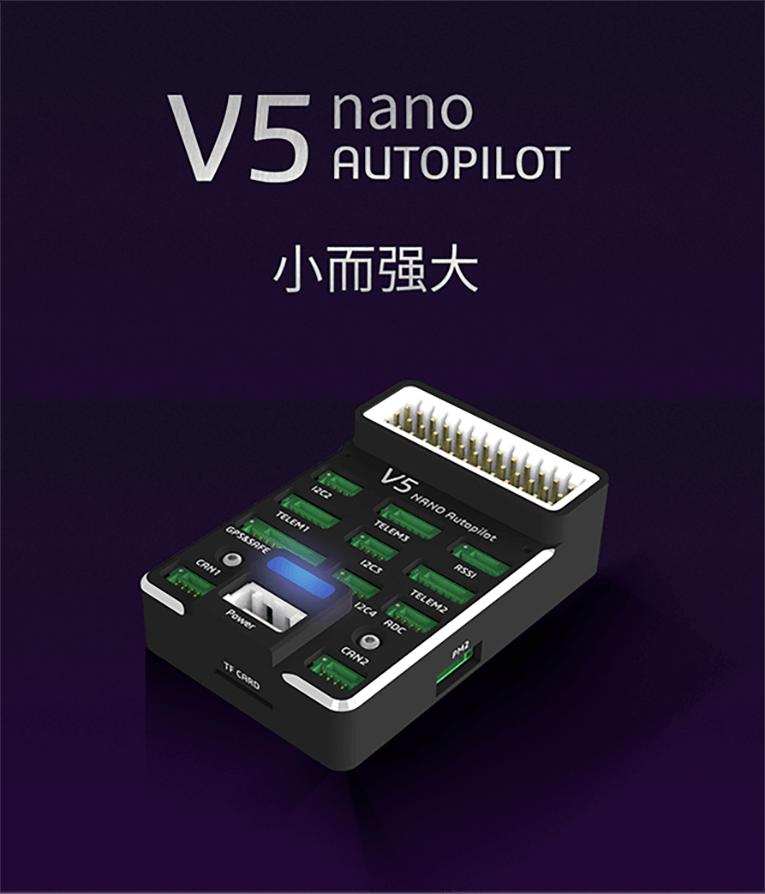
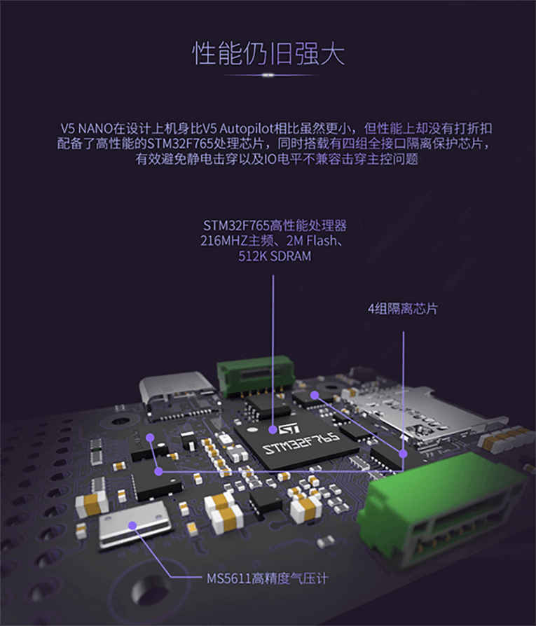

CUAV V5 Nano Overview¶
{kind=link}
The CUAV v5 Nano is an advanced STM32F765 autopilot designed and made by CUAV. CUAV v5 Nano is intended for engineers and hobbyists who are looking for the power of CUAV V5+ but are working with smaller drones.
Specifications¶
Processor
32-bit ARM Cortex M7 core with DPFPU
216 Mhz/512 KB RAM/2 MB Flash
Sensors
InvenSense ICM20689 accelerometer / gyroscope
InvenSense ICM20602 : accelerometer / gyroscope
Bosch BMI055 accelerometer / gyroscope
MS5611 barometer
IST8310 magnetometer
Power
Operating power: 4.3~5.4V
USB Input: 4.75~5.25V
High-power servo rail, up to 36V (servo rail does not power the autopilot)
Dual voltage and current monitor inputs
CUAV v5 nano can be dual redundant if power is provided to Power 1 and USB inputs
Interfaces
8 - 11 PWM servo outputs
3 dedicated PWM/Capture inputs on FMU
S.Bus servo output
PPM connector supports all RC protocols (including SBUS, DSM, ST24, SRXL and PPM)
SBUS/DSM/RSSI connector supports all RC protocols (including SBUS, DSM, ST24, SRXL and PPM) and analog / PWM RSSI input
5x general purpose serial ports
3x I2C ports
4x SPI bus
2x CAN Bus ports
2x analog battery monitor ports
Other
Dimensions: 60mm x 40mm x 14mm
Operating temperature: -20 ~ 80°c（Measured value）
Unboxing and Review Video¶
Where to Buy¶
Order from here.
Official retailers are listed here.
Quick Start¶

- Interfaces
Main Interface
Function
Power 1
Primary power module. Autopilot power, V & I monitor
PM2
2 x ADC, ie second V & I monitor. Does not provide power
TF Card
Insert SD card for log file and terrain data storage
M1 - M8
Main Outputs. Servo/motor/D-Shot capable
A1 - A3
Additional Outputs. Servo/motor capable
DSU7
Serial 6 (uart7)
ADC
Analog sensor input
I2C2/I2C3/I2C4
External I2C (Compass / rangefinder etc)
CAN1/CAN2
CANBUS (DroneCAN, KDECAN, ToshibaCAN)
GPS & SAFETY
CUAV NEO v2 GPS with compass, safety switch, LED, buzzer
TELEM1 / TELEM2
Serial ports (telemetry, peripherals, companion computer)
DSM/SBUS/RSSI
RC Input (SBUS / DSM / ST24 / SRXL /PPM ), RSSI Input
{kind=link}

RC Input¶
The RC pin on the MAIN/AUX interface and the DSM/SBUS RC pin are tied together, which by default is mappped to a timer input, and can be used for all ArduPilot supported receiver protocols, except CRSF/ELRS and SRXL2 which require a true full UART connection. Bi-directional protocols which include telemetry, such as CRSF/ELRS, SRXL2, and FPort, can also provide telemetry if the correct parameters are set when using these protocols, if the TX input of UART6 (SERIAL5) is also used.
In order for SRXL2 and FPort to provide telemetry, SERIAL5_PROTOCOL should be set to “23”, enabling the UART6 TX function instead of the timer interrupt, and:
FPort: SERIAL5_OPTIONS = 7
SRXL2: SERIAL5_OPTIONS = 4
CRSF requires a full UART connection, so should be connected to TELEM1(USART2) or TELEM2(USART3). Set the appropriate SERIAL1 or SERIAL2 options to 0.
Any UART can be used for RC system connections in ArduPilot also, and is compatible with all protocols except PPM. See Radio Control Systems for details.
UART Mapping¶
SERIAL0 -> USB MAVLINK
SERIAL1 -> USART2 (Telem1)
SERIAL2 -> USART3 (Telem2)
SERIAL3 -> USART1 (GPS)
SERIAL4 -> UART4 (UART4)
SERIAL5 -> UART6 (TX pin is tied to RC pin)
SERIAL6 -> UART7 (Debug)
SERIAL7 -> USB SLCAN
The SERIAL1/2 port have RTS/CTS pins.
PWM Output¶
The CUAV v5 Nano supports up to 11 PWM outputs. All 11 outputs support all normal PWM output formats. All outputs except numbers 7 and 8 support DShot. Bi-Directional DShot is not supported.
Note
BLHeli Passthru is not supported on any outputs except 9,10, and 11.
The first 8 outputs are labelled “MAIN OUT” on the case. The next 3 outputs are labelled CAP1 to CAP3 on the case. The CAP4 pin cannot be used as a PWM output.
The 11 PWM outputs are in 4 groups:
PWM 1, 2, 3 and 4 in group1
PWM 5 and 6 in group2
PWM 7 and 8 in group3
PWM 9, 10 and 11 in group4
Channels within the same group need to use the same output rate. If any channel in a group uses DShot then all channels in the group need to use DShot.
Loading Firmware¶
The board comes pre-installed with an ArduPilot compatible bootloader, allowing the loading of xxxxxx.apj firmware files with any ArduPilot compatible ground station.
Firmware for this board can be found here in sub-folders labeled “CUAVv5Nano”.
More Information¶
CUAV V5 Nano PDF here
More Images¶
{kind=link}
[copywiki destination=”plane,copter,rover,blimp”]